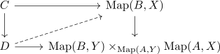
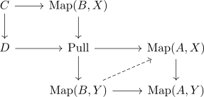
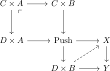

homotopy equivalence of cw complexes and serre fibration induces RLP against sphere into disk
Proposition
Let $B$ be a finite cw-complex, $\iota: A \subseteq B$ a CW subcomplex where the inclusion is a Homotopy equivalence and $p: X \rightarrow Y$ a serre fibration Suppose $C \rightarrow D$ is another finite cw-complex inclusion Then each lifting problem

has a solution
Proof
Note that as $A,B,C,D$ are finite cwc-complexes, they are locally regular compact. Thus by covariant compact open functor as right adjoint for a locally compact space and bijection between pushout / pullback diagrams for adjoints we get a bijection between lifting problems
and


and
here the map
is a serre fibration by precomposition with a finite cw inclusion and postcomposition with a serre fibration as serre fibration
Thus there exists a lift by relative cw complex with homotopy equivalence and lifting problem